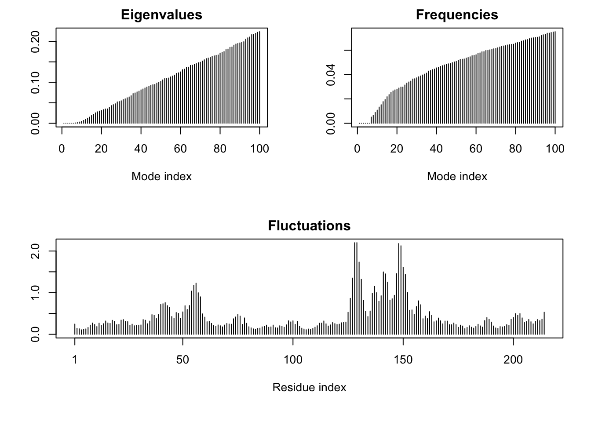

Normal mode analysis (NMA) is a bioinformatics method for predicting functional motions. It will show us the parts of the protein that are “flexible” (i.e. the most dynamic).
m <-nma(adk)
Building Hessian... Done in 0.084 seconds.
Diagonalizing Hessian... Done in 0.634 seconds.
plot(m)

Make a “movie” of this thing moving.
mktrj(m, file="adk_nma.pdb")
Comparative analysis of all ADK structures
First, we get the sequence of ADK and use this to search the PDB database.
aa <-get.seq("1ake_a")
Warning in get.seq("1ake_a"): Removing existing file: seqs.fasta
Viewing all these structures looks like a mess. We need to try something else…
We will align and superimpose these structures.
library("BiocManager")pdbs <-pdbaln(files, fit =TRUE, exefile="msa")
Reading PDB files:
pdbs/split_chain/1AKE_A.pdb
pdbs/split_chain/4X8M_A.pdb
pdbs/split_chain/6S36_A.pdb
pdbs/split_chain/6RZE_A.pdb
pdbs/split_chain/4X8H_A.pdb
pdbs/split_chain/3HPR_A.pdb
pdbs/split_chain/1E4V_A.pdb
pdbs/split_chain/5EJE_A.pdb
pdbs/split_chain/1E4Y_A.pdb
pdbs/split_chain/3X2S_A.pdb
pdbs/split_chain/6HAP_A.pdb
pdbs/split_chain/6HAM_A.pdb
pdbs/split_chain/4K46_A.pdb
pdbs/split_chain/4NP6_A.pdb
pdbs/split_chain/3GMT_A.pdb
pdbs/split_chain/4PZL_A.pdb
PDB has ALT records, taking A only, rm.alt=TRUE
.. PDB has ALT records, taking A only, rm.alt=TRUE
. PDB has ALT records, taking A only, rm.alt=TRUE
.. PDB has ALT records, taking A only, rm.alt=TRUE
.. PDB has ALT records, taking A only, rm.alt=TRUE
.... PDB has ALT records, taking A only, rm.alt=TRUE
. PDB has ALT records, taking A only, rm.alt=TRUE
....
Extracting sequences
pdb/seq: 1 name: pdbs/split_chain/1AKE_A.pdb
PDB has ALT records, taking A only, rm.alt=TRUE
pdb/seq: 2 name: pdbs/split_chain/4X8M_A.pdb
pdb/seq: 3 name: pdbs/split_chain/6S36_A.pdb
PDB has ALT records, taking A only, rm.alt=TRUE
pdb/seq: 4 name: pdbs/split_chain/6RZE_A.pdb
PDB has ALT records, taking A only, rm.alt=TRUE
pdb/seq: 5 name: pdbs/split_chain/4X8H_A.pdb
pdb/seq: 6 name: pdbs/split_chain/3HPR_A.pdb
PDB has ALT records, taking A only, rm.alt=TRUE
pdb/seq: 7 name: pdbs/split_chain/1E4V_A.pdb
pdb/seq: 8 name: pdbs/split_chain/5EJE_A.pdb
PDB has ALT records, taking A only, rm.alt=TRUE
pdb/seq: 9 name: pdbs/split_chain/1E4Y_A.pdb
pdb/seq: 10 name: pdbs/split_chain/3X2S_A.pdb
pdb/seq: 11 name: pdbs/split_chain/6HAP_A.pdb
pdb/seq: 12 name: pdbs/split_chain/6HAM_A.pdb
PDB has ALT records, taking A only, rm.alt=TRUE
pdb/seq: 13 name: pdbs/split_chain/4K46_A.pdb
PDB has ALT records, taking A only, rm.alt=TRUE
pdb/seq: 14 name: pdbs/split_chain/4NP6_A.pdb
pdb/seq: 15 name: pdbs/split_chain/3GMT_A.pdb
pdb/seq: 16 name: pdbs/split_chain/4PZL_A.pdb
#pdbs
# Vector containing PDB codes for figure axisids <-basename.pdb(pdbs$id)
# Draw schematic alignmentplot(pdbs, labels=ids)
PCA to the rescue…
pc.xray <-pca(pdbs)
and plot my results
plot(pc.xray)
# Calculate RMSDrd <-rmsd(pdbs)
Warning in rmsd(pdbs): No indices provided, using the 204 non NA positions